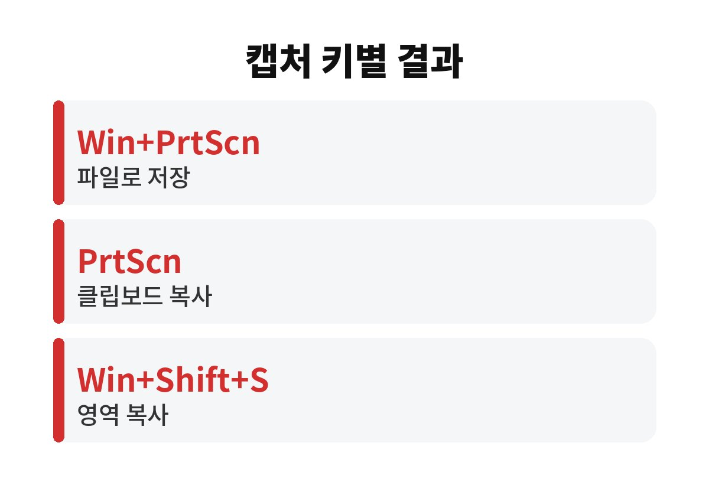
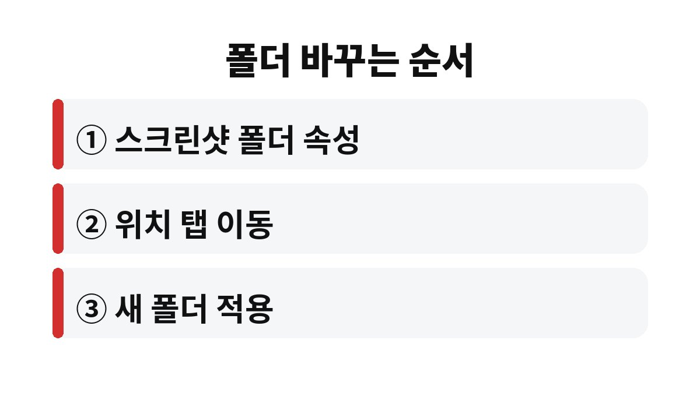

윈도우11 스크린샷 저장 위치는 캡처하는 방법에 따라 갈린다.
Win+PrtScn은 사진 폴더 안의 스크린샷 폴더에 파일로 남고, PrtScn이나 Win+Shift+S는 파일이 아니라 클립보드에만 복사된다.
캡처했는데 폴더가 비어 있는 이유는 대부분 여기에 있다.
같은 화면을 찍어도 누르는 키 조합이 다르면 결과물이 놓이는 곳이 다르다.
파일로 저장되는 방식이 있고, 붙여넣기 전까지 임시로만 존재하는 방식이 있다.
아래 표에서 내가 쓰는 방식이 어느 쪽인지부터 본다.
| 누르는 키 | 결과 | 찾는 곳 |
|---|---|---|
| Win+PrtScn | 화면 전체를 파일로 저장 | 사진 > 스크린샷 폴더 |
| PrtScn | 클립보드에 복사 | 붙여넣기(Ctrl+V)로만 확인 |
| Win+Shift+S | 선택 영역을 클립보드에 복사 | 알림을 눌러 캡처 도구에서 열기 |

Microsoft 지원 문서도 Windows 로고 키와 Print Screen을 함께 누르면 사진 아래 스크린샷 폴더에 저장된다고 안내한다.
이 방식은 화면 위쪽에 캡처 막대가 뜨고, 영역을 고르면 클립보드에 담긴다.
화면 오른쪽 아래에 알림이 잠깐 나타나는데 그 알림을 놓치면 바로 사라진다.
당황하지 말고 메모장이나 메신저 입력창에 Ctrl+V를 눌러 보면 된다.
저장이 필요하면 알림을 눌러 캡처 도구가 열렸을 때 저장 아이콘을 누른다.
파일 탐색기 왼쪽의 사진을 열면 스크린샷 폴더가 있다.
처음 한 번이라도 파일로 저장해야 폴더가 만들어지므로, 아직 한 번도 안 찍었다면 폴더가 없는 것이 정상이다.
OneDrive 백업을 켠 PC에서는 같은 폴더가 OneDrive 안의 사진 아래에 있을 수 있다.
일부 노트북은 PrtScn이 기능 키와 겹쳐 있어 Fn을 함께 눌러야 한다.
키보드 모델마다 표기가 달라 같은 키가 PrtSc, Prt Sc, PrtScn으로 적혀 있기도 하다.
캡처 도구를 열어 두고 새로 만들기로 찍으면 결과가 편집 창에 먼저 뜬다.
여기서 Ctrl+S를 누르면 파일 이름과 저장할 폴더를 직접 고를 수 있다.
형식은 PNG와 JPG 중에서 고른다. 글자가 많은 화면은 PNG가 또렷하고, 용량을 줄여 메신저로 보낼 때는 JPG가 가볍다.
예를 들어 은행 앱 화면이나 오류 메시지를 상담원에게 보내야 한다면, Win+Shift+S로 영역만 고른 뒤 바로 붙여넣는 편이 빠르다.
반대로 나중에 다시 볼 자료라면 Win+PrtScn처럼 파일이 남는 방식이 낫다.
Win+PrtScn 결과가 들어가는 폴더는 사진 > 스크린샷 폴더 자체를 옮겨 바꾼다.
다른 드라이브로 옮기고 싶을 때 쓰는 방법이다.

이 방법은 Win+PrtScn 파일에만 적용된다.
Win+Shift+S로 찍은 영상은 캡처 도구 설정에서 저장 방식을 따로 봐야 하고, 메뉴 이름은 앱 버전에 따라 다를 수 있다.
중요한 화면은 캡처한 직후 파일로 저장해 두는 쪽이 안전하다.
캡처에 비밀번호나 계좌번호가 같이 찍혔다면 공유하기 전에 그 부분을 잘라 내거나 가려야 한다.
클립보드는 다음 복사 때 덮어써지기 때문이다.
다음에 확인할 것은 하나다. 자주 쓰는 캡처 키가 파일형인지 클립보드형인지 한 번 눌러 보고 알아 두면 된다.
참고 자료: Microsoft 지원 「캡처 도구를 사용하여 스크린샷 캡처」(2026년 11월 확인) · Microsoft 지원 「Windows에서 내 게임 클립 및 스크린샷은 어디에 저장되나요」(2026년 11월 확인)
※ 2026년 기준 공식 안내를 바탕으로 정리한 글이며, 기기·앱 버전에 따라 메뉴 이름이 다를 수 있다.